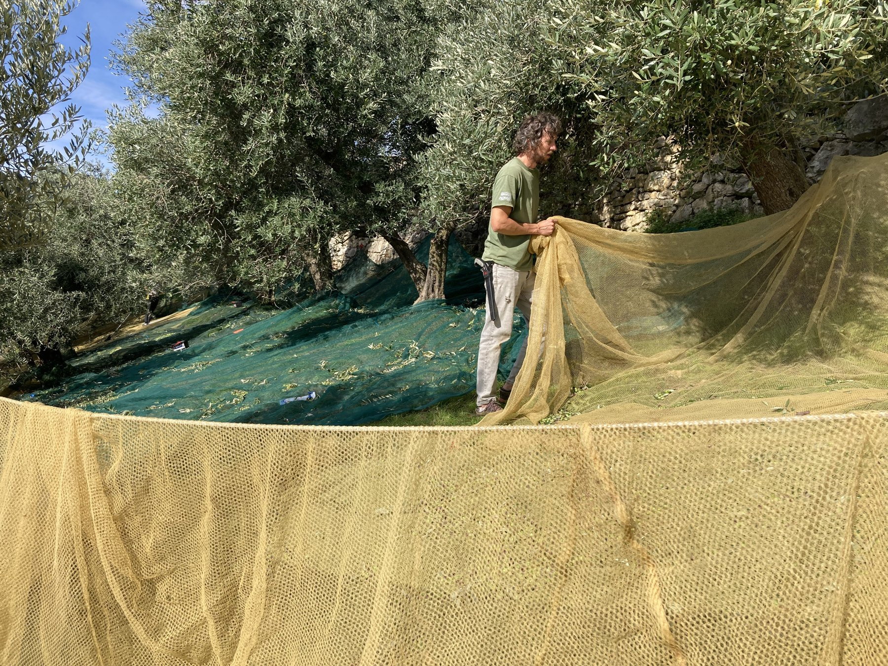
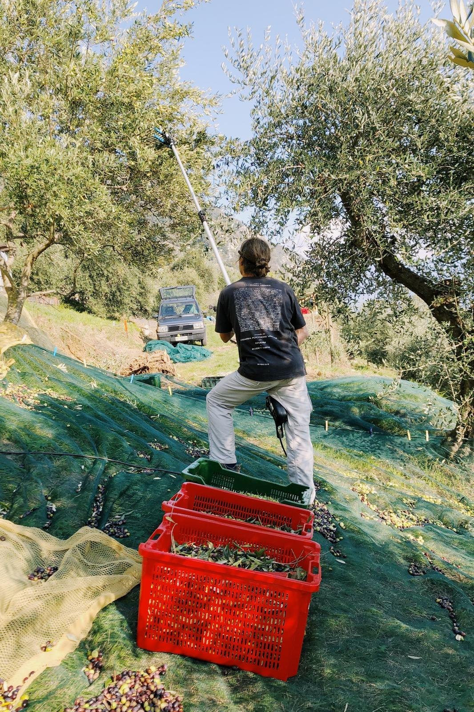
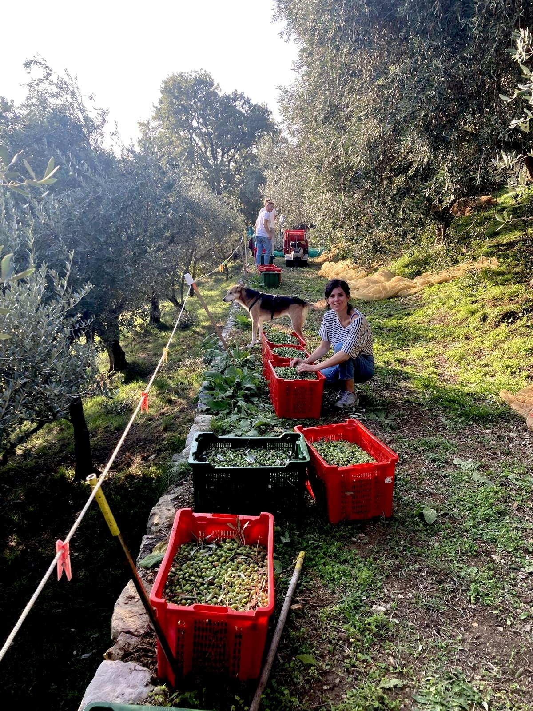
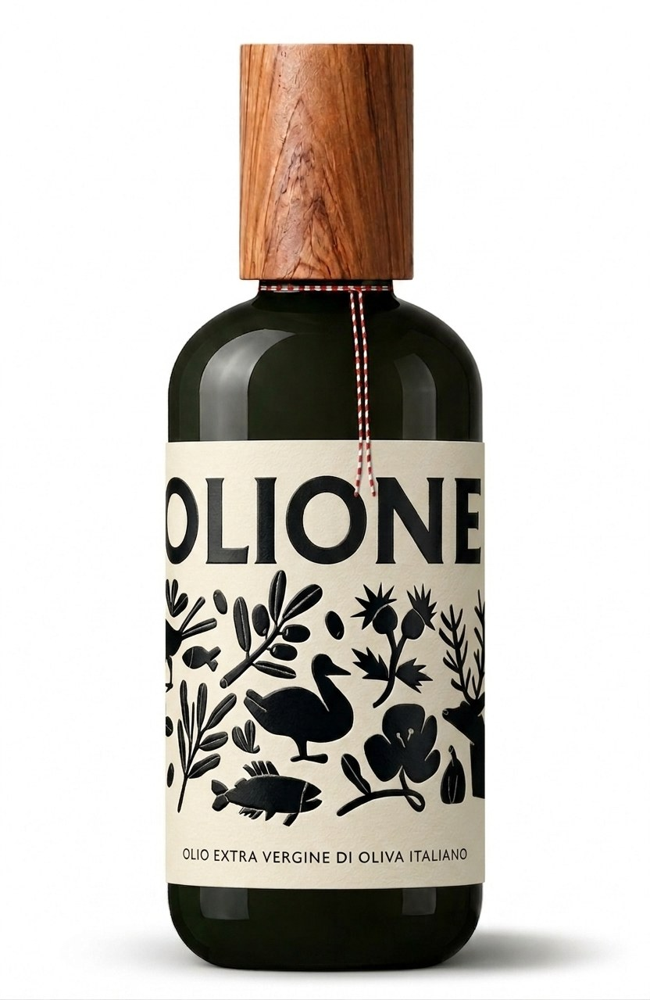

Predore · Lago d'Iseo
Olio extravergine dal produttore
L'uliveto
Tra lago e pietra
Coltiviamo olive su terrazzamenti sostenuti da antichi muri in pietra, affacciati sul Lago d'Iseo, nel comune di Predore: circa un centinaio di piante, di circa cinquant'anni.
Qui il microclima del Sebino — il Lago d'Iseo — accompagna la crescita degli olivi: luce, pendenza e cura quotidiana del territorio danno carattere al frutto e, di stagione in stagione, all'olio.


Prodotto dalla cura del nostro territorio
La raccolta
Ottobre, ogni sera al frantoio
Raccogliamo le olive nelle prime settimane di ottobre, quando il frutto è ancora fresco e pieno di aroma.
Dopo la raccolta, ogni sera, le portiamo al frantoio per la frangitura e l'estrazione dell'olio: tempi brevi, per custodire la qualità dell'extravergine.


Al frantoio
Dalle olive all'olio
Un percorso meccanico, senza intermedi chimici: dalla pulizia del frutto fino alla filtrazione, ogni passaggio prepara un extravergine limpido e riconoscibile.

- Pulizia e lavaggio
- Frangitura
- Gramolatura
- Estrazione
- Separazione e filtrazione
I nostri prodotti
Olio extravergine di oliva di qualità superiore
Olione è un olio extravergine di oliva italiano di categoria superiore, ottenuto direttamente dalle olive e unicamente mediante procedimenti meccanici.
Il nostro olio è segnalato dalla “Guida agli Extra Vergini” di Slow Food Editore.
In bottiglia da 0,5 l, pensata per la tavola: un olio del Sebino di piccola misura, legato ai terrazzamenti di Predore e alla campagna di raccolta dell'anno.
Lo produciamo noi e lo spediamo in tutta Italia. Scrivici per ordinare la bottiglia della campagna in corso.

Contatti
Ordina dal produttore
Per ordinare Olione da Carlo Duci, sapere la disponibilità della campagna o organizzare un ritiro: siamo a Predore, sul Lago d'Iseo, e spediamo in tutta Italia.
- olioevopredore@gmail.com
- Telefono
- +39 320 379 7518
- Social
- Indirizzo
- Via San Michele 34, 24060 Foresto Sparso (BG)